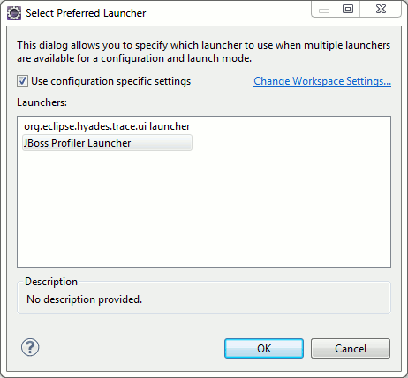

< Main Index Visual Page Editor >
Profiler |
|
|
JBoss Profiler |
There is now a basic integration of JBoss Profiler available. It is available as a Profile launch configuration which currently works for Java application launches.  |
|
|
|